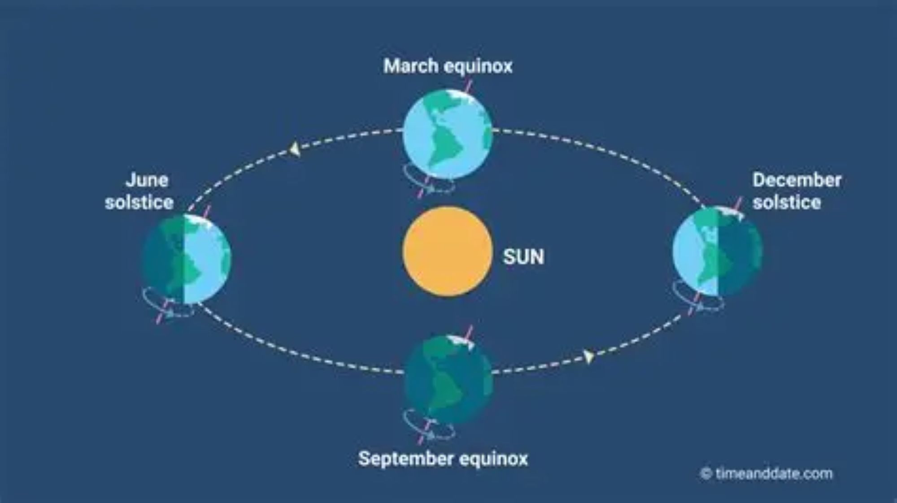

Twice each year, the sun seems to pause at the farthest point of its annual journey. The days have been getting longer and longer, or shorter and shorter, and then something changes. The movement reaches its extreme and begins to turn back.
That moment is the solstice. It is one of the great hinges of the year — not because the sun literally stops, but because its apparent movement northward or southward across the sky reaches its greatest extent. The word itself comes from the Latin solstitium, meaning “sun stands still.”
There are two solstices every year. Around June, the sun reaches its northernmost apparent position, producing the summer solstice in the Northern Hemisphere and the winter solstice in the Southern Hemisphere. Around December, it reaches its southernmost position, reversing the seasons between the hemispheres.

Image: © timeanddate.com, from “What Is the Equinox? And What Is the Solstice?”
The reason the solstices happen is not that Earth moves dramatically closer to or farther from the sun. It is the tilt of Earth's axis. Our planet's axis is tilted by about 23.4 degrees relative to the plane of its orbit. As Earth travels around the sun, that tilt means the Northern and Southern Hemispheres take turns leaning toward the sun.
In June, the Northern Hemisphere is tilted toward the sun. Sunlight reaches it at a higher angle, and the sun travels a longer path across the northern sky. The result is more hours of daylight and, in the Northern Hemisphere, the summer solstice. In December, the geometry reverses: the Southern Hemisphere is tilted toward the sun, while the Northern Hemisphere receives shorter days and longer nights.
The solstice is therefore not simply a date on a calendar. It is a precise astronomical moment in the relationship between Earth and the sun. The seasons we experience are the result of that geometry playing out over the whole planet.
The word “solstice” makes sense when you watch the sun closely. Across the weeks before the summer solstice, sunrise creeps farther toward the northeast and sunset farther toward the northwest in the Northern Hemisphere. The arc of the sun across the daytime sky grows longer. Then, around the solstice, the movement becomes almost imperceptible before reversing.
The same thing happens in winter, in the opposite direction. Sunrise has been moving south along the horizon, sunset has been following it, and the daylight arc has been shrinking. Near the December solstice, the sun reaches its southernmost position. Then the process reverses. Daylight begins its slow return.
That apparent pause is what people have been able to observe without instruments for thousands of years. You do not need a clock or a telescope to notice that the sun is rising in a different part of the horizon than it did a month earlier. You only need to keep looking.
For ancient communities, these changes could be practical as well as meaningful. The amount and direction of sunlight affected the timing of agricultural work, the length of the working day, and the seasonal cycle of plants and animals. Over generations, careful observation could turn the movement of the sun into a kind of calendar written across the horizon.
The solstices were especially useful markers because they identify the extremes of that annual movement. Once you know where the sun reaches its farthest point, you know that the direction of its movement is about to change.
This is one reason solstices appear so often in ancient architecture. The important thing is not simply that an ancient building happens to face the sun. Some monuments were deliberately positioned so that the rising or setting sun appeared at a particular place at a particular time of year.
Stonehenge is perhaps the best-known example. English Heritage describes the monument's main axis as aligned with the solstitial axis. At midsummer, the sun rises in the direction of the Heel Stone; at midwinter, the setting sun would have appeared between the uprights of the tallest trilithon. The wider landscape contains additional monuments and avenues oriented to the same seasonal extremes.
Archaeology can tell us a great deal about those alignments, but it cannot give us a complete script for what the people who gathered there believed. English Heritage notes that the monument's layout suggests the solstices were important and that people may have gathered for ceremonies, feasting, and other activities. The evidence is strongest for the importance of the solar events themselves; the exact beliefs attached to them remain less certain.
Newgrange in Ireland offers an even more intimate encounter with the winter solstice. The Neolithic passage tomb was built with its passage and chamber facing the rising sun at midwinter. A small opening above the entrance, known as the roof box, allows the low winter sun to send a beam of light into the chamber around the solstice.
Heritage Ireland describes the alignment as occurring over several days around December 21, with the beam capable of illuminating the chamber for up to about seventeen minutes depending on conditions. It is difficult to imagine a more direct demonstration of seasonal time: a structure built thousands of years ago, waiting for the sun to arrive at precisely the right place in the sky.
At Stonehenge, the sun was framed by standing stones. At Newgrange, it was drawn into a dark chamber. Both are reminders that the solstice was not merely something people could calculate. It could be experienced.
The solstice has also remained part of living seasonal traditions. Summer solstice celebrations in Europe often center on fire, gathering, music, and the extraordinary amount of daylight available around midsummer. UNESCO recognizes the summer solstice fire festivals of the Pyrenees as living intangible cultural heritage, describing the torchlit descent from the mountains as a celebration that strengthens community ties, identity, and continuity.
Winter solstice traditions often carry a different emotional weight. The darkest point of the year can become a marker of endurance and return: the night is longest, but from that point onward the daylight begins, slowly, to increase again. That simple astronomical fact has made the winter solstice a natural symbol of renewal in many different cultural settings, although the traditions themselves have different histories and meanings.
China offers another long-running example of a culture that turned careful observation of the sun into a practical seasonal system. The traditional Twenty-Four Solar Terms divide the sun's annual movement into twenty-four periods, linking astronomical observation with agriculture, weather, and everyday routines. The summer and winter solstices are part of that larger seasonal framework.
There is something wonderfully human about the two solstices being opposites. In June, the light seems abundant. The evenings stretch on. Gardens are still growing, meals can linger outdoors, and darkness feels like something that arrives reluctantly.
In December, the experience is reversed. Morning light comes late. Afternoon fades quickly. Windows become mirrors after sunset, and the warm parts of the house become more noticeable. The world feels smaller, quieter, more inward.
Yet astronomically, the two moments are doing the same thing. Each marks an extreme in the sun's apparent north-south movement. Each is a turning point. Each says, in its own way, this is as far as we go in this direction.
That is perhaps why the solstice remains such a compelling marker of time. It gives us an actual edge in the year. The light has reached its maximum or minimum, and then the direction changes.
We can notice that change without making it mystical. Watch the sunrise from the same window for a few weeks. Notice where the last light falls in the garden. Pay attention to how long the afternoon feels. The sun is keeping time whether we are watching or not.
And then, almost imperceptibly, it turns.